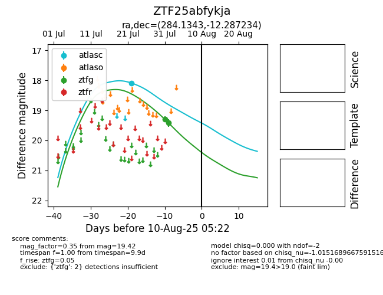

Target ZTF25abfykja at 2025-08-10 05:22, see:
FINK: fink-portal.org/ZTF25abfykja
Lasair: lasair-ztf.lsst.ac.uk/objects/ZTF25abfykja
ALeRCE: alerce.online/object/ZTF25abfykja
alt names
ZTF25abfykja (ztf,fink)
coordinates:
equatorial (ra, dec) = (284.1343,-12.28723)
galactic (l, b) = (22.5204,-6.68353)
photometry
last atlasc=18.09, ztfg=19.42
1 atlasc, 2 ztfg detections
